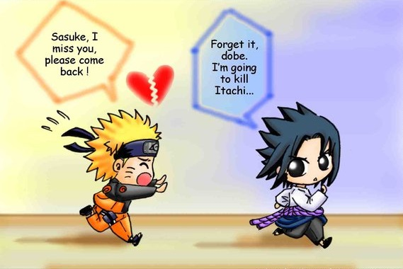

<!doctype html>
<html lang="en"></html>
 <head>
        <title>Scratch Game</title>
        <link rel="stylesheet" href="style.css" type="text/css">
    </head>
    <body>
        <ul id="nav">
            <li><a href="index.html">Index</a></li>
            <li><a href="about.html">About Me</a></li>
            <li><a href="resume.html">Resume</a></li>
            <li><a href="portfolio.html">Portfolio</a></li>
            <li><a href="scratch.html">Scratch</a></li>
        </ul>
        <div id="div">
    <h1 id="align2">The Chase for Sasuke</h1>
        </div>
        <p id="align">Basically, all you do is try to get Sasuke while avoiding Sakura and Hinata.<br>
        I made this game because I wanted to do something Naruto related and figured that this made<br>
        the most sense as Naruto was constantly chasing Sasuke in the anime.My inspiration was my man<br>
        named Steven Bao. He showed me his game and I made mine with a similar concept, just Naruto themed.<br> 
        There is really no purpose for this game, I made it for fun and to learn more about coding.
</p>
         <div id="div">
             <h1>Reflection and Answers</h1>
         </div>
          <h2><b>Describe some programming concepts or structures you learned in this unit that you applied in your game.</b></h2>
          <p id="desc">Some programming concepts that I learned to use more effectivly was the forever block. At first I thought it wasn't all that great until I used it effectively to keep each sprite look like it was actually moving instead of sliding across the screen.</p>
         <hr>
         <h2><b>Did you encounter any problems or struggles while working on this project? If you did, how did you solve or overcome them?</b></h3>
         <p id="desc">One problem I encountered was the costume changes with my Sakura sprite. When the game was supposed to get harder, Sakura would keep a walking animation instead of a running animation when it sped up. Instead if using a forever block for both animations, I used a repeat until block for the walking and a forever block for the running. This allowed for the walking animation to stop and the running animation to commence when the score reached a certain value.</p>
         <hr>
         <h2><b>What aspects of your game do you like best?</b></h4>
         <p id="desc">I like how my game is very easy to play but also very challenging.</p>
         <hr>
         <h2><b>If more time was given for you to work on your game, what would you improve or modify about your game?</b></h5>
         <p id="desc">If I had more time to work on my game, I would've improved and modified my scripts because I felt that they were a bit basic although they did work.</p>
         <hr>
          <h2 id="align">Click here to play!</h2>
        <div>
            <a href="https://scratch.mit.edu/projects/184768785/"></a> 
        </div>
    </body>